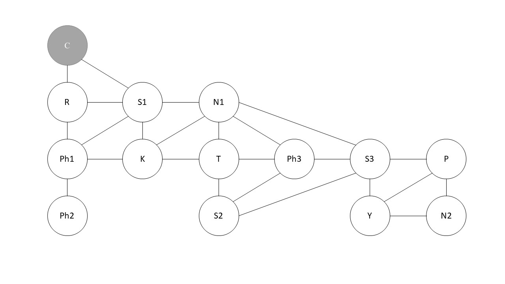
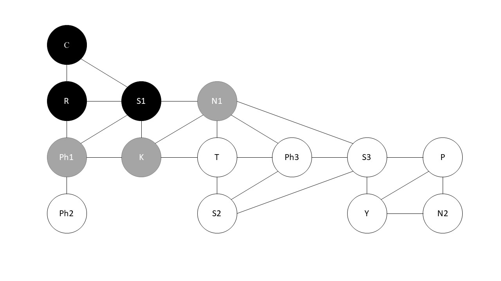
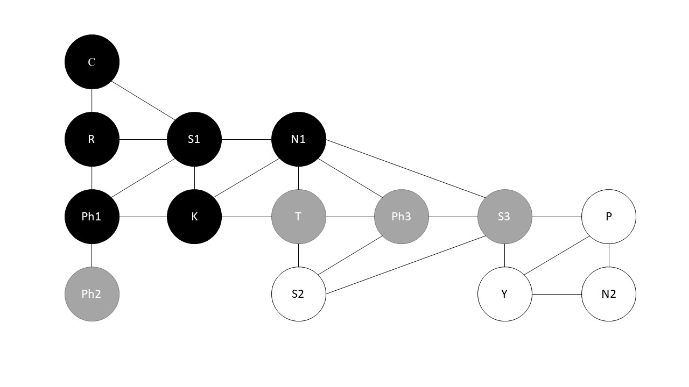
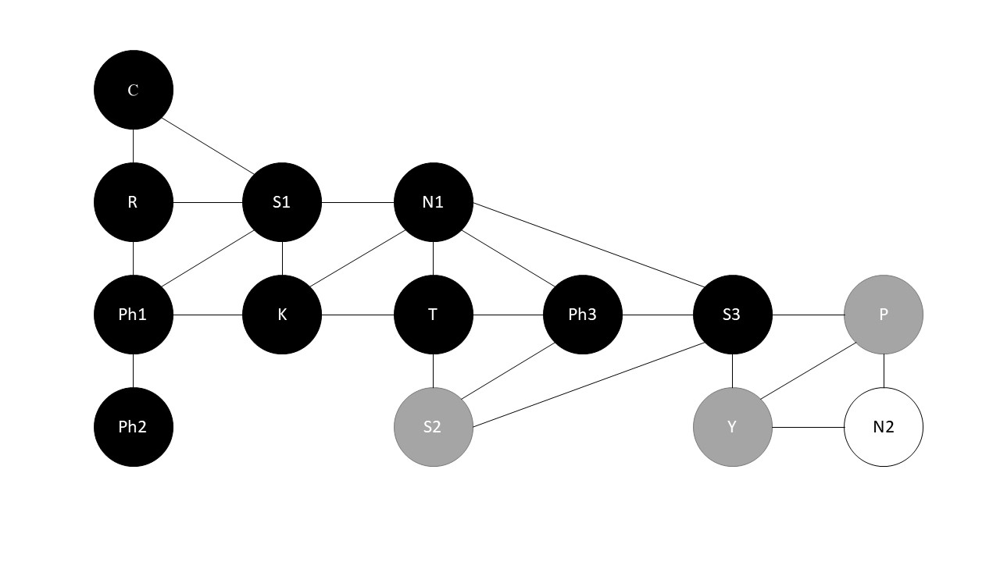
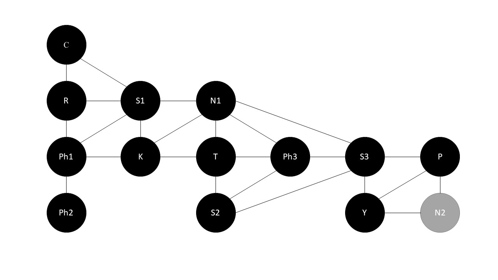
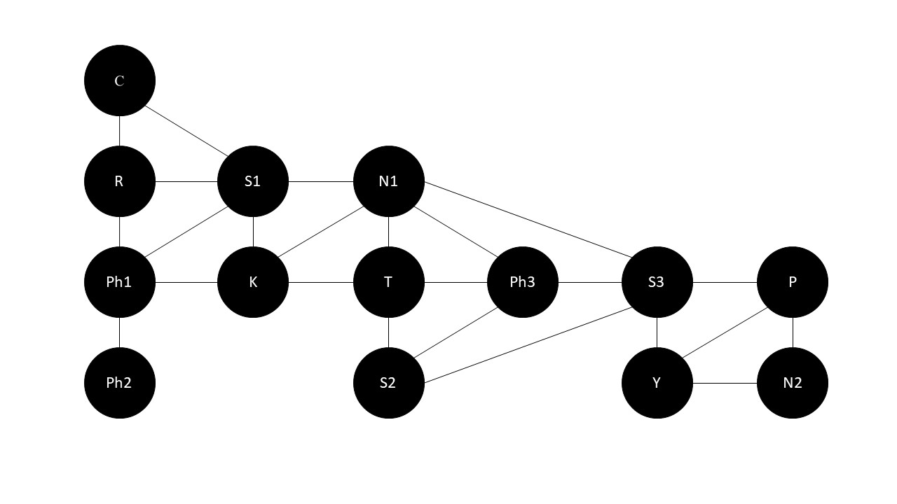

BFS การท่องไปในกราฟแบบแนวกว้าง
Node สีขาว คือ Node ที่ยังไม่ถูกค้นพบ
Node สีเทา คือ Node ที่ถูกค้นพบแล้วแต่ยังสำรวจไม่เสร็จ
Node สีดำ คือ Node ที่สำรวจเสร็จแล้ว
อย่างตัวอย่างนี้เราเริ่มต้นสำรวจจาก Node C
หลังจากสำรวจ Node C เสร็จก็จะสำรวจ Node ใกล้เคียงต่อคือ Node R และ S1
หลังจากสำรวจ Node R และ S1 เสร็จก็จะสำรวจ Node ใกล้เคียงต่อคือ Node Ph1, K และ N1
หลังจากสำรวจ Node Ph1, K และ N1 เสร็จก็จะสำรวจ Node ใกล้เคียงต่อคือ Node Ph2, T, Ph3 และ S3
หลังจากสำรวจ Node Ph2, T, Ph3 และ S3 เสร็จก็จะสำรวจ Nodeใกล้เคียงต่อคือ Node S2, Y และ P
หลังจากสำรวจ Node S2, Y และ P เสร็จก็จะสำรวจ Node ใกล้เคียงต่อคือ Node N2 เป็น Node สุดท้าย
หลังจากสำรวจทุก Node เสร็จแล้ว ก็จะเรียงได้: C, R, S1, Ph1, K, N1, Ph2, T, Ph3, S3, S2, Y, P, N2